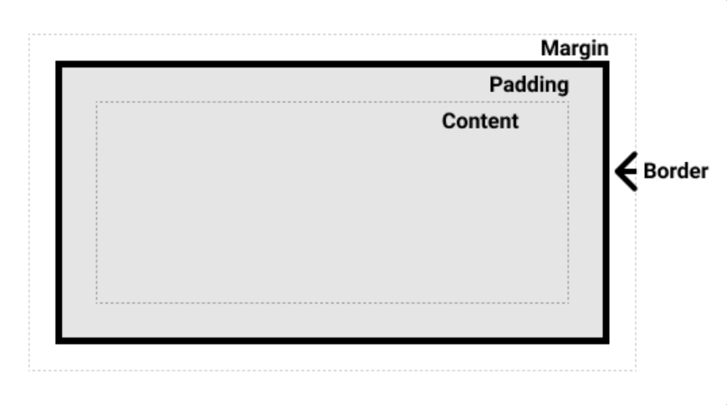

Structure, Phrasing and Display
In HTML, structural elements are usually block elements that help organize the main parts of a page. Examples include header, main, section, article, and footer. These elements usually start on a new line and take up the full available width. Phrasing elements are usually inline elements that appear inside text, such as strong, em, span, and a. These do not normally start on a new line, and they only take up as much space as they need.
The CSS display property controls how an element appears on the page. For example, block makes an element behave like a block, inline keeps it inside the text flow, and inline-block allows it to stay inline while still accepting width and height. Other useful values include none, which hides an element, and flex, which is often used to build layouts by arranging items in rows or columns. Changing display makes it possible to turn inline elements into blocks, line blocks into flex containers, and generally control layout more precisely.
Box Model
The CSS box model describes how every block element is built from several layers. At the center is the content area, which holds the text or image. Around that is padding, which adds space inside the element between the content and the border. The border wraps around the padding and content, and outside of that is the margin, which creates space between the element and surrounding elements.
The box model affects the total size of an element. By default, the width property only controls the content area, so adding padding and borders makes the full box larger than the set width. The box-sizing property can change this behavior. When box-sizing is set to border-box, the width includes the content, padding, and border, which makes layout easier to control and more predictable.

Background Images
Images placed in img tags are part of the page content. They can have alt text, can be resized directly in HTML or CSS, and are important when the image itself carries meaning. Background images added through CSS are mainly decorative or used for visual design. They are useful when an image is there to support the layout or mood of a section rather than to provide essential content.
Background images behave differently from regular image tags because they are controlled entirely through CSS. This makes them useful for covering a whole article or section and layering text on top. However, because they are not actual content in the HTML, they are not the best choice for important images that users need to understand directly.